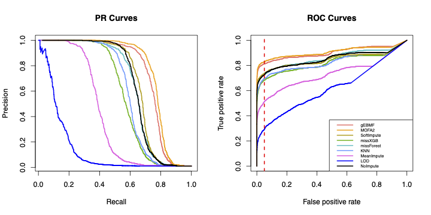
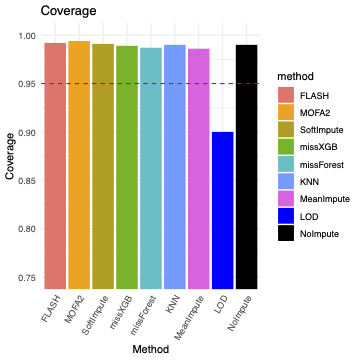

Last updated: 2025-04-13
Checks: 7 0
Knit directory:
omics-imputation-paper/analysis/
This reproducible R Markdown analysis was created with workflowr (version 1.7.1). The Checks tab describes the reproducibility checks that were applied when the results were created. The Past versions tab lists the development history.
Great! Since the R Markdown file has been committed to the Git repository, you know the exact version of the code that produced these results.
Great job! The global environment was empty. Objects defined in the global environment can affect the analysis in your R Markdown file in unknown ways. For reproduciblity it’s best to always run the code in an empty environment.
The command set.seed(1) was run prior to running the
code in the R Markdown file. Setting a seed ensures that any results
that rely on randomness, e.g. subsampling or permutations, are
reproducible.
Great job! Recording the operating system, R version, and package versions is critical for reproducibility.
Nice! There were no cached chunks for this analysis, so you can be confident that you successfully produced the results during this run.
Great job! Using relative paths to the files within your workflowr project makes it easier to run your code on other machines.
Great! You are using Git for version control. Tracking code development and connecting the code version to the results is critical for reproducibility.
The results in this page were generated with repository version 1b86950. See the Past versions tab to see a history of the changes made to the R Markdown and HTML files.
Note that you need to be careful to ensure that all relevant files for
the analysis have been committed to Git prior to generating the results
(you can use wflow_publish or
wflow_git_commit). workflowr only checks the R Markdown
file, but you know if there are other scripts or data files that it
depends on. Below is the status of the Git repository when the results
were generated:
Ignored files:
Ignored: .Rproj.user/
Note that any generated files, e.g. HTML, png, CSS, etc., are not included in this status report because it is ok for generated content to have uncommitted changes.
These are the previous versions of the repository in which changes were
made to the R Markdown (analysis/qtl_simulation.Rmd) and
HTML (docs/qtl_simulation.html) files. If you’ve configured
a remote Git repository (see ?wflow_git_remote), click on
the hyperlinks in the table below to view the files as they were in that
past version.
| File | Version | Author | Date | Message |
|---|---|---|---|---|
| html | 791cd85 | “John | 2025-04-13 | update |
| Rmd | ec0cffe | “John | 2025-04-13 | update |
| html | 5c6539a | “John | 2025-04-12 | Build site. |
| Rmd | 049a505 | “John | 2025-04-12 | updates |
| html | 049a505 | “John | 2025-04-12 | updates |
| Rmd | 5b008ea | “John | 2025-04-12 | updates |
| Rmd | 7706bf2 | “John | 2025-04-12 | updates |
This page documents pipleine for simulating genotype data for QTL analysis and performing fine-mapping analysis. The pipeline consists of five main steps that process molecular phenotype data, simulate genetic variants, handle missing data, and perform statistical analysis.
First, load the packages needed for this analysis and the original phenotype data.
library(tidyverse)
library(igraph)
library(Matrix)
library(mvtnorm)
library(flashier)
library(impute)
library(softImpute)
library(missForest)
library(xgboost)
library(randomForest)
library(PCAtools)
library(BiocSingular)We select features that don’t include any missing for our future analysis.
phenotype <- read_delim('Knight_QCed.bed.gz')
phenotype <- phenotype[order(phenotype$`#chr`, phenotype$start, phenotype$end ),]
Y.comp <- phenotype %>% drop_na()
#write_delim(Y.comp, 'simulation_knight_all.bed.gz')First, we prepare phenotype data by removing effects of known covariates and hidden factors. The first step is to extract hidden factors from complete phenotype matrix.
The phenotype should be a dataset in which rows are
features (i.e. proteins, CpG sites, metabolites) and columns are
samples. And the first four columns are: chr, start, end, and
gene_id.
The covariate should be a dataset for known covariates
(i.e. age, sex, PMI). The first column is covariates name, the rest are
corresponding values for each sample.
residExpPath <- Y.comp
covPath <- "path/to/covariates"
residExpDF <- read_delim(residExpPath, show_col_types=FALSE)
covDF <- read_delim(covPath, show_col_types=FALSE)
covDF <- covDF %>% select_if(~ !any(is.na(.)))
commonMPSamples <- intersect(colnames(covDF), colnames(residExpDF))
covDFcommon <- cbind(covDF[, 1], covDF[, commonMPSamples])
residExpPC <- pca(
residExpDF[,commonMPSamples], # The first four columns are: chr, start, end, and gene_id; so we skip those.
scale = TRUE,
center = TRUE,
BSPARAM = ExactParam())
M <- apply(residExpDF[, commonMPSamples], 1, function(X){ (X - mean(X))/sqrt(var(X))});
residSigma2 <- var(as.vector(M));
paste('sigma2:', residSigma2)
MPPCNum <- chooseMarchenkoPastur(
.dim = dim(residExpDF[, commonMPSamples]), var.explained=residExpPC$sdev^2, noise=residSigma2)
MPPCsDF <- as.data.frame(residExpPC$rotated[, 1:MPPCNum])
MPColMatrix <- matrix(c(rep('Hidden_Factor_PC', times=MPPCNum), seq(1, MPPCNum)), ncol=2, nrow=MPPCNum)
colnames(MPPCsDF) <- apply(MPColMatrix, 1, function(X){return(paste0(X[1], X[2]))})
rownames(MPPCsDF) <- commonMPSamples
# Add #id Column
MPPCsDF <- as.data.frame(t(MPPCsDF))
MPPCsDF$id <- rownames(MPPCsDF)
MPPCsDF = MPPCsDF %>% rename('#id' = 'id')
colnames(covDFcommon)[1] = '#id'
PCA_pheno = (rbind(covDFcommon, MPPCsDF))Then, after calculating hidden factors, we regress out all covariates from phenotype data, including known and hidden covariates.
pheno <- Y.comp
covariate <- PCA_pheno # output from last step
# Extract samples in both files (Outliers will be removed in here as they are no longer presented in the header of factor)
extraction_sample_list <- intersect(colnames(pheno), colnames(covariate))
if(length(extraction_sample_list) == 0){
stop("No samples are overlapped in two files!")
}
# Subset the data:
covariate = covariate[,extraction_sample_list]%>%as.matrix()%>%t()
pheno_id = pheno%>%dplyr::select(1:4)
pheno = pheno%>%dplyr::select(rownames(covariate))%>%as.matrix()%>%t()
# Get residual
pheno_resid = .lm.fit(x = cbind(1,covariate), y = pheno)$residuals
pheno_output = cbind(pheno_id, pheno_resid%>%t())
pheno_output <- pheno_output[order(pheno_output$`#chr`, pheno_output$start, pheno_output$end ),]The next step is to generate simulated genetic variants associated with the residual phenotypes.
We will use residual of phenotype (pheno_output) to
simulate X.
source('code/simulateX.R')
Xmat <- NULL # Final matrix of X
Chr <- NULL # summary of number of snps for each feature
Beta <- NULL # true casual
effect <- 1
gve <- 0.5
Y <- pheno_output # This would be the residual of phenotype, output from step 1
for (i in 1:n) { # n is the number of feature we will simulate
print(paste0('Generating X for ', i, 'th feature'))
y <- matrix(Y[i, 5:ncol(Y)], nrow = 1) # drop chr, start, end , ID
sim_X <- simulateX(y, effect, gve)
Xmat <- cbind(Xmat, sim_X$X)
Chr <- rbind(Chr, c(i, ncol(sim_X$X)))
Beta[[i]] <- sim_X$true_causal
}
Chr <- as.data.frame(Chr)
Chr$V2 <- as.numeric(Chr$V2)
Chr$V3 <- cumsum(Chr$V2)This step, we will introduce and impute missing data for our phenotype matrix.
The extact details of assigning missing refer to Section
Adding Additional Missing Values in imputation
accuracy benchmark. The output from this step is
mat_na.
For imputing missing data, refer to Section
Impute Dataset with Generated Missing by Using Different Methods
in imputation
accuracy benchmark.
The next step is to regress out covariates from imputed phenotype. This step will be repeated for each method. Again, identify hidden factors first.
residExpDF <- Y.imp # output after imputation, imputated phenotype
covDF <- read_delim(covPath, show_col_types=FALSE)
covDF <- covDF %>% select_if(~ !any(is.na(.)))
commonMPSamples <- intersect(colnames(covDF), colnames(residExpDF))
covDFcommon <- cbind(covDF[, 1], covDF[, commonMPSamples])
residExpPC <- pca(
residExpDF[,commonMPSamples], # The first four columns are: chr, start, end, and gene_id; so we skip those.
scale = TRUE,
center = TRUE,
BSPARAM = ExactParam())
M <- apply(residExpDF[, commonMPSamples], 1, function(X){ (X - mean(X))/sqrt(var(X))});
residSigma2 <- var(as.vector(M));
paste('sigma2:', residSigma2)
MPPCNum <- chooseMarchenkoPastur(
.dim = dim(residExpDF[, commonMPSamples]), var.explained=residExpPC$sdev^2, noise=residSigma2)
MPPCsDF <- as.data.frame(residExpPC$rotated[, 1:MPPCNum])
MPColMatrix <- matrix(c(rep('Hidden_Factor_PC', times=MPPCNum), seq(1, MPPCNum)), ncol=2, nrow=MPPCNum)
colnames(MPPCsDF) <- apply(MPColMatrix, 1, function(X){return(paste0(X[1], X[2]))})
rownames(MPPCsDF) <- commonMPSamples
# Add #id Column
MPPCsDF <- as.data.frame(t(MPPCsDF))
MPPCsDF$id <- rownames(MPPCsDF)
MPPCsDF = MPPCsDF %>% rename('#id' = 'id')
colnames(covDFcommon)[1] = '#id'
PCA_pheno = (rbind(covDFcommon, MPPCsDF))Then, we calculate the residuals.
pheno <- Y.imp # imputed phenotype
covariate <- PCA_pheno # output from last step
# Extract samples in both files (Outliers will be removed in here as they are no longer presented in the header of factor)
extraction_sample_list <- intersect(colnames(pheno), colnames(covariate))
if(length(extraction_sample_list) == 0){
stop("No samples are overlapped in two files!")
}
# Subset the data:
covariate = covariate[,extraction_sample_list]%>%as.matrix()%>%t()
pheno_id = pheno%>%dplyr::select(1:4)
pheno = pheno%>%dplyr::select(rownames(covariate))%>%as.matrix()%>%t()
# Get residual
pheno_resid = .lm.fit(x = cbind(1,covariate), y = pheno)$residuals
pheno_output = cbind(pheno_id, pheno_resid%>%t())
pheno_output <- pheno_output[order(pheno_output$`#chr`, pheno_output$start, pheno_output$end ),]Finally, we will identify causal genetic variants by using each method and evaluate performance with ground truth.
The number of ground truth is calculated below. And the true PIP is
extracted from Beta
no.true <- sum(sapply((1:n), function(x){length(Beta[[x]])}))
true.pip <- list()
for (i in 1:nrow(pheno_output)) {
n_pip <- Chr$V2[i]
pip_lst <- rep(0, n_pip)
pip_lst[Beta[[i]]] <- 1
true.pip[[i]] <- pip_lst
}In this analysis, we are interested in the result if we only use samples without missing (i.e. no imputation).
# No imputation
noimp.susie.result <- NULL
noimp.susie.pip <- NULL
missing_mat <- as.data.frame(mat_na)[, colnames(pheno_output)[-c(1:4)]]
original_mat <- missing_mat
phenoToUse <- pheno_output[, -c(1:4)]
YtoUse <- as.matrix(t(phenoToUse))
OriginalX <- as.matrix(t(original_mat))
for (i in 1:nrow(YtoUse)) {
# Select X
#print(i)
if (i == 1) {
X <- Xmat[, 1:Chr$V3[i]]
} else {
X <- Xmat[, (Chr$V3[i-1]+1):Chr$V3[i]]
}
# missing entries
mis_sample <- which(is.na(OriginalX[, i]))
# observed sample
X_obs <- X[-mis_sample, ]
Y_obs <- YtoUse[, i][-mis_sample]
# Run susie
fitted <- susie(X_obs, Y_obs, compute_univariate_zscore = TRUE)
noimp.susie.result[[i]] <- c(fitted$sets$cs$L1, fitted$sets$cs$L2, fitted$sets$cs$L3)
# flash.size <- c(flash.size, c(length(fitted$sets$cs$L1), length(fitted$sets$cs$L2), length(fitted$sets$cs$L3)))
# flash.purity.min <- c(flash.purity.min, fitted$sets$purity$min.abs.corr)
# flash.purity.med <- c(flash.purity.med, fitted$sets$purity$median.abs.corr)
noimp.susie.pip[[i]] <- fitted$pip
#flash.sd <- c(flash.sd, fitted$sigma2)
}
sum(sapply((1:length(noimp.susie.result)), function(x){length(noimp.susie.result[[x]])}))
sum(sapply((1:length(noimp.susie.result)), function(x){(length(which(noimp.susie.result[[x]] %in% Beta[[x]])))}))The SuSiE fine-mapping is also applied to imputed phenotype. The following is an example for EBMF imputed phenotype. This step will be repeated for each method.
ebmf.susie.result <- NULL
ebmf.susie.pip <- NULL
for (i in 1:nrow(YtoUse)) {
# Select X
#print(i)
if (i == 1) {
X <- Xmat[, 1:Chr$V3[i]]
} else {
X <- Xmat[, (Chr$V3[i-1]+1):Chr$V3[i]]
}
# Run susie
fitted <- susie(X, YtoUse[, i], compute_univariate_zscore = TRUE)
ebmf.susie.result[[i]] <- c(fitted$sets$cs$L1, fitted$sets$cs$L2, fitted$sets$cs$L3)
# flash.size <- c(flash.size, c(length(fitted$sets$cs$L1), length(fitted$sets$cs$L2), length(fitted$sets$cs$L3)))
# flash.purity.min <- c(flash.purity.min, fitted$sets$purity$min.abs.corr)
# flash.purity.med <- c(flash.purity.med, fitted$sets$purity$median.abs.corr)
ebmf.susie.pip[[i]] <- fitted$pip
#flash.sd <- c(flash.sd, fitted$sigma2)
}
ebmf.TP <- sum(sapply((1:length(ebmf.susie.result)), function(x){length(ebmf.susie.result[[x]])}))
ebmf.FP <- sum(sapply((1:length(ebmf.susie.result)), function(x){(length(which(ebmf.susie.result[[x]] %in% Beta[[x]])))}))The output from this step will be
number of true positive,
number of false positives, and
a list of PIP values for each method.
We plot the PR and ROC curves by using PIP from each method to compare its performance with ground truth.
df.pip <- data.frame(true = unlist(true.pip),
ebmf = unlist(ebmf.susie.pip),
xgb = unlist(xgb.susie.pip),
rf = unlist(mofa.susie.pip),
knn = unlist(knn.susie.pip),
soft = unlist(soft.susie.pip),
mean = unlist(mean.susie.pip),
lod = unlist(lod.susie.pip),
mofa = unlist(rf.susie.pip),
noimp = unlist(noimp.susie.pip)
)roc_curve <- roc(unlist(true.pip), unlist(flash.susie.pip))
plot(roc_curve, main = "ROC Curve", col = "#F8766D", lwd = 2)
roc_curve <- roc(unlist(true.pip), unlist(mofa.susie.pip))
plot(roc_curve, main = "ROC Curve", col = "orange", lwd = 2, add=TRUE)
roc_curve <- roc(unlist(true.pip), unlist(xgb.susie.pip))
plot(roc_curve, main = "ROC Curve", col = "#53B400", lwd = 2, add=TRUE)
roc_curve <- roc(unlist(true.pip), unlist(rf.susie.pip))
plot(roc_curve, main = "ROC Curve", col = "#00BFC4", lwd = 2, add=TRUE)
roc_curve <- roc(unlist(true.pip), unlist(knn.susie.pip))
plot(roc_curve, main = "ROC Curve", col = "#619CFF", lwd = 2, add=TRUE)
roc_curve <- roc(unlist(true.pip), unlist(soft.susie.pip))
plot(roc_curve, main = "ROC Curve", col = "#B79F00", lwd = 2, add=TRUE)
roc_curve <- roc(unlist(true.pip), unlist(mean.susie.pip))
plot(roc_curve, main = "ROC Curve", col = "#F564E3", lwd = 2, add=TRUE)
roc_curve <- roc(unlist(true.pip), unlist(lod.susie.pip))
plot(roc_curve, main = "ROC Curve", col = 'blue', lwd = 2, add=TRUE)
legend("bottomright",c('EBMF','MOFA2', 'SoftImpute', "missXGB", 'missForest', "KNN", "MeanImpute",'LOD'),col=c("#F8766D", 'orange', "#B79F00", "#53B400", "#00BFC4", "#619CFF", "#F564E3", 'blue'),lwd=3)pred <- prediction(df.pip$ebmf, df.pip$true)
perf <- performance(pred,"tpr","fpr")
plot(perf, col='#F8766D',
main="ROC Curves", lwd = 2)
pred <- prediction(df.pip$xgb, df.pip$true)
perf <- performance(pred,"tpr","fpr")
plot(perf, col='#53B400', add=TRUE, lwd = 2)
pred <- prediction(df.pip$rf, df.pip$true)
perf <- performance(pred,"tpr","fpr")
plot(perf, col='#00BFC4', add=TRUE, lwd = 2)
pred <- prediction(df.pip$knn, df.pip$true)
perf <- performance(pred,"tpr","fpr")
plot(perf, col='#619CFF', add=TRUE, lwd = 2)
pred <- prediction(df.pip$soft, df.pip$true)
perf <- performance(pred,"tpr","fpr")
plot(perf, col='#B79F00', add=TRUE, lwd = 2)
pred <- prediction(df.pip$mean, df.pip$true)
perf <- performance(pred,"tpr","fpr")
plot(perf, col='#F564E3', add=TRUE, lwd = 2)
pred <- prediction(df.pip$lod, df.pip$true)
perf <- performance(pred,"tpr","fpr")
plot(perf, col='blue', add=TRUE, lwd = 2)
pred <- prediction(df.pip$mofa, df.pip$true)
perf <- performance(pred,"tpr","fpr")
plot(perf, col='orange', lwd = 2, add = TRUE)
pred <- prediction(df.pip$noimp, df.pip$true)
perf <- performance(pred,"tpr","fpr")
plot(perf, col='black', lwd = 2, add = TRUE)
abline(v = 0.05, col = 'red', lty = 2, lwd = 2)
legend("bottomright",c('gEBMF','MOFA2', 'SoftImpute', "missXGB", 'missForest', "KNN", "MeanImpute",'LOD', 'NoImpute'),col=c("#F8766D", 'orange', "#B79F00", "#53B400", "#00BFC4", "#619CFF", "#F564E3", 'blue', 'black'),lwd=2, cex = 0.6)We also plot the coverage for each method. The coverage is defind as 1 - FDR (False Discovery Rate).
fdr <- c(ebmf.FP/(ebmf.FP+ebmf.TP), mofa.FP/(mofa.FP+mofa.TP), soft.FP/(soft.FP+soft.TP),
xgb.FP/(xgb.FP+xgb.TP), rf.FP/(rf.FP+rf.TP), knn.FP/(knn.FP+knn.TP),
mean.FP/(mean.FP+mean.TP), lod.FP/(lod.FP+lod.TP), noimp.FP/(noimp.FP+noimp.TP))
coverage1 <- 1 - fdr
method <- c('gEBMF','MOFA2', 'SoftImpute', "missXGB", 'missForest', "KNN", "MeanImpute",'LOD', 'NoImpute')
df$method <- factor(df$method, levels = c('gEBMF', 'MOFA2', "SoftImpute", "missXGB", 'missForest', "KNN", "MeanImpute", 'LOD', 'NoImpute'))
custom_colors <- c("gEBMF" = "#F8766D", "SoftImpute" = "#B79F00", "MissXGB" = "#53B400", 'MissForest' = "#00BFC4", "KNN" = "#619CFF", "MeanImpute" = "#F564E3", 'LOD' = 'blue', 'NoImpute' = 'black', 'MOFA2' = 'orange')
ggplot(df, aes(x = method, y = coverage, fill = method)) +
geom_bar(stat = 'identity') +
geom_hline(yintercept = 0.95, linetype = 'dashed', color = 'red') +
coord_cartesian(ylim = c(0.75, 1)) +
scale_fill_manual(values = custom_colors) +
labs(title = 'Coverage',
x = 'Method',
y = 'Coverage') +
scale_x_discrete(guide = guide_axis(angle=60)) +
theme_minimal()

sessionInfo()R version 4.4.3 (2025-02-28)
Platform: aarch64-apple-darwin20
Running under: macOS Sequoia 15.4
Matrix products: default
BLAS: /Library/Frameworks/R.framework/Versions/4.4-arm64/Resources/lib/libRblas.0.dylib
LAPACK: /Library/Frameworks/R.framework/Versions/4.4-arm64/Resources/lib/libRlapack.dylib; LAPACK version 3.12.0
locale:
[1] en_US.UTF-8/en_US.UTF-8/en_US.UTF-8/C/en_US.UTF-8/en_US.UTF-8
time zone: America/Chicago
tzcode source: internal
attached base packages:
[1] stats graphics grDevices utils datasets methods base
loaded via a namespace (and not attached):
[1] vctrs_0.6.5 cli_3.6.4 knitr_1.50 rlang_1.1.5
[5] xfun_0.51 stringi_1.8.7 promises_1.3.2 jsonlite_2.0.0
[9] workflowr_1.7.1 glue_1.8.0 rprojroot_2.0.4 git2r_0.36.2
[13] htmltools_0.5.8.1 httpuv_1.6.15 sass_0.4.9 rmarkdown_2.29
[17] evaluate_1.0.3 jquerylib_0.1.4 tibble_3.2.1 fastmap_1.2.0
[21] yaml_2.3.10 lifecycle_1.0.4 whisker_0.4.1 stringr_1.5.1
[25] compiler_4.4.3 fs_1.6.5 Rcpp_1.0.14 pkgconfig_2.0.3
[29] rstudioapi_0.17.1 later_1.4.1 digest_0.6.37 R6_2.6.1
[33] pillar_1.10.1 magrittr_2.0.3 bslib_0.9.0 tools_4.4.3
[37] cachem_1.1.0